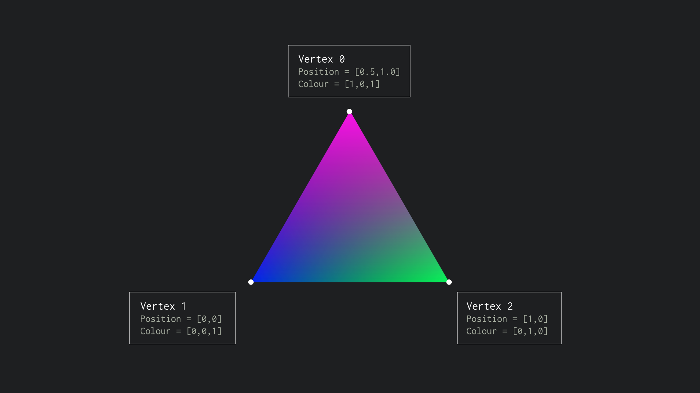
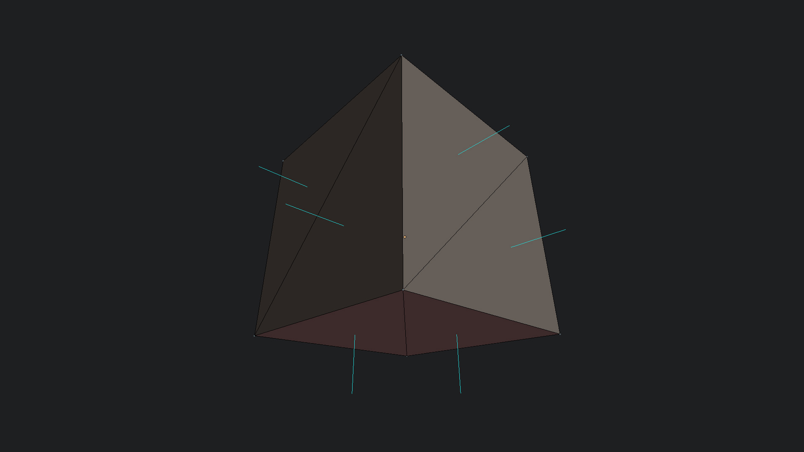
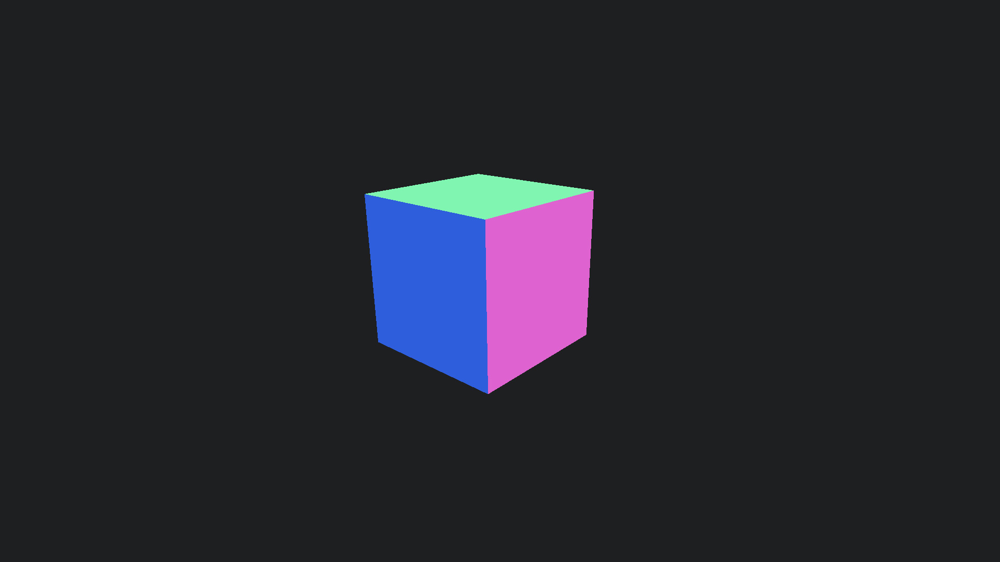

Meshes
Mesh Attributes
The vertices of a mesh can store additional information besides position. We can store whatever data we wish in fact. These bits of vertex information are called attributes. One attribute that's very useful to include is the direction a triangle that the vertex belongs to is facing. This is called a surface normal.
Visualising Surface Normals
We can get a feel for how normals work by visualising them in our shader. Normals are stored as XYZ vec3 values the same as positions.
To a shader a XYZ directions and RGB colours are the same thing. We can easily assign the direction as a colour. The only thing we have to do is take into account that directions can have negative values e.g vec3(-1.0,-1.0,0.0) whereas colours only have positive values.
//VERTEXSHADER
// a 'varying' is a variable that is passed from the
// vertex shader to the fragment shader
varying vec3 _normal;
void main()
{
// normals have to be multiplied by their own special
// 'normalMatrix' which is supplied by THREEjs
_normal = normalMatrix * normal;
gl_Position = projectionMatrix * modelViewMatrix * vec4(position, 1.0);
}
//FRAGMENTSHADER
varying vec3 _normal;
void main()
{
// Use the surface direction as a colour
// x,y,z and r,g,b are the same thing (numbers)
// to a shader
vec3 N = (_normal / 2.0) + 0.5;
gl_FragColor = vec4(N, 1.0);
}All being well you should see something that looks like the below example.
